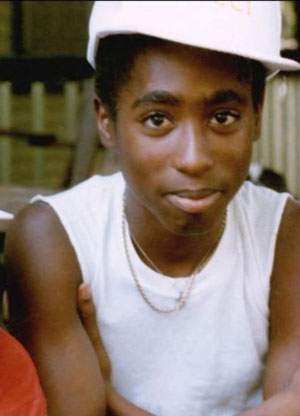
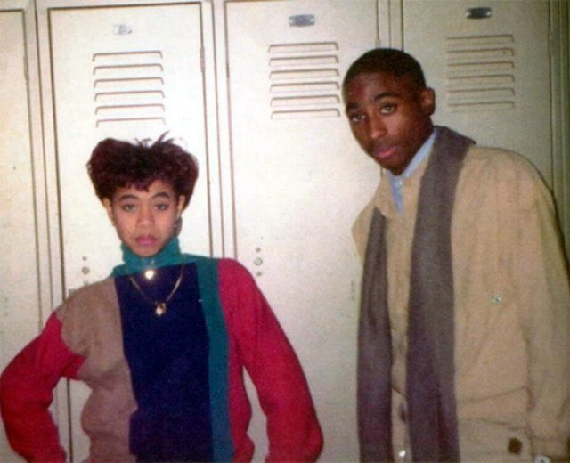

EARLY YEARS
Tupac Amaru Shakur was born on June 16, 1971 in the East Harlem section of Manhattan (New York City). Born
Lesane Parish Crooks, he was renamed, at age one, after Túpac Amaru II (the descendant of the last Incan
ruler, Túpac Amaru), who was executed in Peru in 1781 after his failed revolt against Spanish rule.
Shakur's mother explained, "I wanted him to have the name of revolutionary, indigenous people in the world.
I wanted him to know he was part of a world culture and not just from a neighborhood."
Tupac had an older stepbrother, Mopreme "Komani" Shakur, and a half-sister, Sekyiwa, two years his junior.
His parents, Afeni Shakur—born Alice Faye Williams in North Carolina—and his birth father, Billy Garland,
had been active Black Panther Party members in New York in the late 1960s and early 1970s.

School Years

In 1984, Tupac's family moved from New York City to Baltimore, Maryland. He attended eighth grade at Roland
Park Middle School, then two years at Paul Laurence Dunbar High School.
On transfer to the Baltimore School for the Arts, he studied acting, poetry, jazz, and ballet. He performed
in Shakespeare's plays—depicting timeless themes, now seen in gang warfare, he would recall —and as the
Mouse King role in The Nutcracker ballet.
With his friend Dana "Mouse" Smith as beatbox, he won competitions as reputedly the school's best rapper.
Also known for his humor, he could mix with all crowds. As a teen, he listened to musicians including Kate
Bush, Culture Club, Sinéad O'Connor, and U2.
At Baltimore's arts high school, Tupac befriended Jada Pinkett, who would become a subject of some of his
poems.
After his death, she would call him "one of my best friends. He was like a brother. It was beyond
friendship for us. The type of relationship we had, you only get that once in a lifetime."